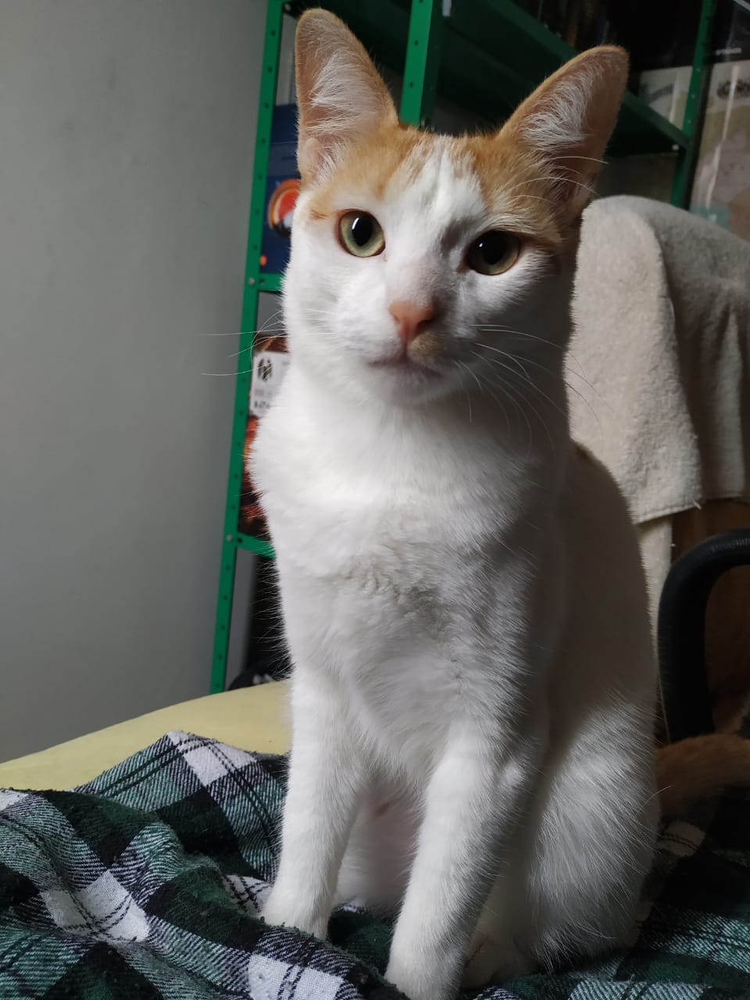

A Lila é muito lindinha, muito maravilhinha.
A Lila é uma gatinha branquinha e lindinha, ela é muito delicada e miadeira.
A Lila é uma gata com muita energia disponível em seu branco corpitcho. Por tal motivo, razão e circunstância, ela exige um nível elevado de atenção. Mia, mia e mia. Mas mais parece uma pombinha.
Dia e noite, noite e dia. Pelo menos é gatinha. Fofinha, branquinha, levinha, magrelinha, suavinha, molinha. Essa é a Lilinha.
